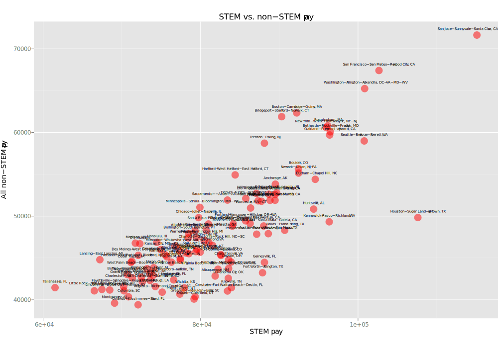
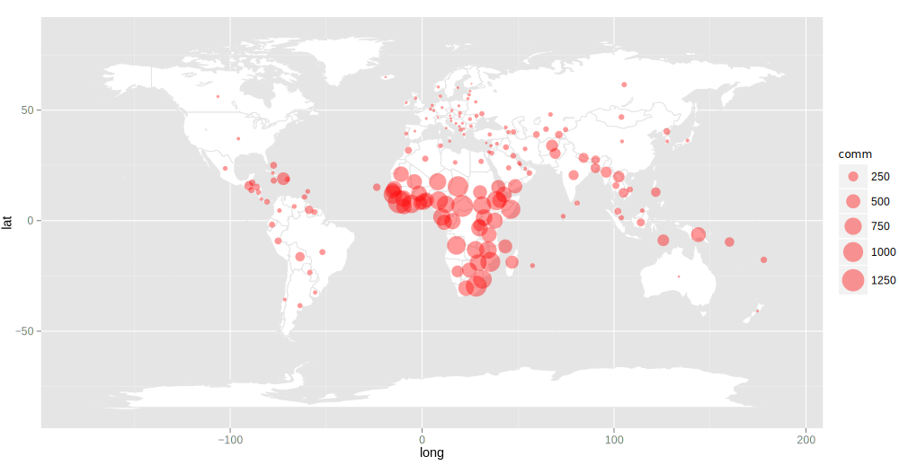

Getting started
Downloads
First download R from a Comprehensive R Archive Network (CRAN):
Download RStudio -- a set of integrated tools designed to help you be more productive with R. It includes a console, syntax-highlighting editor that supports direct code execution, as well as tools for plotting, history, debugging and workspace management:
RStudio Environment
Top left: view data files
Top left: view data files
Top right: history panel
Bottom right: view plots, files, libraries and help
Bottom-left: coding console.
Setup
Launch RStudio and set the working directory. Place any CSV or other data files that RStudio imports into this directory. Any PDFs or image files that RStudio exports will be saved into this working directory.
If working from behind a firewall or if there are any problems installing libraries, enter this code in the console after launching RStudio and enter return:
Sys.setenv(http_proxy="http://proxy.bloomberg.com:8080")
Libraries
Install any needed libraries, for example:
install.packages("ggplot2")
#Loading multiple libraries at once
install.packages(c("ggplot2", "gcookbook"))
Then load those libraries (quote marks not needed to load):
library(ggplot2)
Importing data
Import data (first place data files in working directory) by assigning a variable:
superheroes <- read.csv("superheroes-2.csv")
View the imported data in RStudio's viewing console:
View(superheroes)
Scatterplot
Basic scatterplot
All dots sized/colored the same

library(ggplot2)
msa <- read.csv("msas-50-states.csv")
ggplot(msa, aes(x=STEM_Pay, y=All_Pay)) +
geom_point(size=6, color="red", alpha=0.5) +
geom_text(aes(label=MSA), size=2, vjust=-2) +
labs(x="STEM pay",
y="All non-STEM pay", title="STEM vs. non-STEM pay")
Bubble plot
Dots sized/colored to multiple variables
ggplot(msa, aes(x=STEM_Pay, y=All_Pay, size=Total_Employment, color=STEM_Pay_Multiple)) +
geom_point(alpha=0.5) + scale_size_area(max_size=15) +
scale_colour_gradientn(colours = c("red", "purple", "blue", "green")) +
geom_text(aes(label=MSA), color="black", size=2, vjust=-2) +
labs(x="STEM pay", y="All non-STEM pay", title="STEM vs. non-STEM pay")
Concentric circles bubble plot
Comparing variables to each other and showing their relationship to the whole
superheroes <- read.csv("superheroes-5.csv") +
ggplot() +
geom_point(data= superheroes, aes(x=date, y=profit, size=gross), color="green", alpha=0.7) +
geom_point(data= superheroes, aes(x=date, y=profit, size=budget), color="darkred", alpha=1) +
scale_size_area(max_size=15) +
geom_text(data=superheroes, aes(x=date, y=profit+50, label=movie, color=studio), size=3) +
xlim(2004, 2014)
Scatterplot matrix
Visualizing pairwise relationships between select variables
#make a subset of the MSA data, using only select columns
msas2 <- subset(msa, select=c(MSA, Total_Employment, STEM_Employment, Non.STEM_Employment,
STEM_Pay, All_Pay, STEM_Employment_percent, STEM_Pay_Multiple))
plot(msas2)
Creating a subset from a continuous range of columns or rows
#selects all rows and columns 5 to 8
pairs(msa[,5:8])
3-D bubble plot
Comparing variables on x, y and z axes
library(rgl)
superheroes <- read.csv("superheroes-2.csv")
plot3d(superheroes$date, superheroes$budget, superheroes$gross, type="s", size=superheroes$profit*2,
col=superheroes$studio_code, lit=FALSE, alpha=0.5)
play3d(spin3d())
Slope chart
Basic slope chart
Shows distribution of data within each column (along y-axis)
library(ggplot2)
wantFind <- read.csv("want-find-test.csv")
ggplot(wantFind) + geom_segment(aes(x=10, xend=40, y=most_important, yend=hardest_to_find), color="red", alpha=0.5) +
xlim(0, 50) + ylim(0, 100) +
geom_text(aes(x=8.6, y=most_important, label=skill), alpha=0.6, size=4, hjust=1) +
geom_text(aes(x=9.8, y=most_important, label=most_important), size=4, hjust=1) +
geom_text(aes(x=40.2, y=hardest_to_find, label=hardest_to_find), size=4, hjust=0) +
geom_text(aes(x=42, y=hardest_to_find, label=skill), alpha=0.6, size=4, hjust=0) +
ggtitle("Skills wanted/hardest to find: Finance sector") +
annotate("text", x=9.8, y=90, label="Most important skills sought", size=5, hjust=1) +
annotate("text", x=40.2, y=90, label="Hardest-to-find skills", size=5, hjust=0)
Ranked slope chart
Even distribution of data along y-axis
col <- read.csv("COL-4.csv")
p <- ggplot(col) + geom_point(aes(x=25, y=STEM_pay), color="red", size=1) +
geom_point(aes(x=75, y=COL), color="red", size=1) + xlim(15,85) +
geom_segment(aes(x=25, xend=75, y=STEM_pay, yend=COL), color="red", alpha=0.5) +
scale_y_reverse()
p + geom_text(aes(x=23.5, y=STEM_pay, label=City), size=2, hjust=1) +
geom_text(aes(x=24.5, y=STEM_pay, label=STEM_pay), size=2, hjust=1) +
geom_text(aes(x=75.5, y=COL, label=COL), size=2, hjust=0) +
geom_text(aes(x=76.5, y=COL, label=City), size=2, hjust=0) +
annotate("text", x=24.5, y=-2, label="STEM pay rank", size=3, hjust=1) +
annotate("text", x=75.5, y=-2, label="Cost of living rank", size=3, hjust=0)
Multi-column rankings chart
Sharp corners with dots
ranks <- read.csv("ranks-ft.csv")
View(ranks)
p <- ggplot(ranks) + geom_point(aes(x=20, y=rank2015), color="red", size=1) +
geom_point(aes(x=40, y=student), color="red", size=1) +
geom_point(aes(x=60, y=alumni), color="red", size=1) +
geom_point(aes(x=80, y=employer), color="red", size=1) +
geom_point(aes(x=100, y=placement), color="red", size=1) +
geom_point(aes(x=120, y=salary), color="red", size=1) +
xlim(-5,140) +
geom_segment(aes(x=20, xend=40, y=rank2015, yend=student), color="red", alpha=0.5) +
geom_segment(aes(x=40, xend=60, y=student, yend=alumni), color="red", alpha=0.5) +
geom_segment(aes(x=60, xend=80, y=alumni, yend=employer), color="red", alpha=0.5) +
geom_segment(aes(x=80, xend=100, y=employer, yend=placement), color="red", alpha=0.5) +
geom_segment(aes(x=100, xend=120, y=placement, yend=salary), color="red", alpha=0.5) +
scale_y_reverse()
p + geom_text(aes(x=17.5, y=rank2015, label=school), size=2, hjust=1) +
geom_text(aes(x=19.5, y=rank2015, label= rank2015), size=2, hjust=1) +
geom_text(aes(x=120.5, y=salary, label=salary), size=2, hjust=0) +
geom_text(aes(x=122.5, y=salary, label=school), size=2, hjust=0) +
annotate("text", x=19.5, y=-2, label="Overall rank", size=3, hjust=1) +
annotate("text", x=40, y=-2, label="Student rank", size=3) +
annotate("text", x=60, y=-2, label="Alumni rank", size=3) +
annotate("text", x=80, y=-2, label="Employer rank", size=3) +
annotate("text", x=100, y=-2, label="Placement rank", size=3) +
annotate("text", x=120.5, y=-2, label="Salary rank", size=3, hjust=0)
Multi-column rankings chart 2
With plateaus, no dots
p <- ggplot(ranks) +
xlim(-5,140) +
geom_segment(aes(x=15, xend=20, y=rank2015, yend=rank2015), color="red", alpha=0.5) +
geom_segment(aes(x=20, xend=35, y=rank2015, yend=student), color="red", alpha=0.5) +
geom_segment(aes(x=35, xend=40, y=student, yend=student), color="red", alpha=0.5) +
geom_segment(aes(x=40, xend=55, y=student, yend=alumni), color="red", alpha=0.5) +
geom_segment(aes(x=55, xend=60, y=alumni, yend=alumni), color="red", alpha=0.5) +
geom_segment(aes(x=60, xend=75, y=alumni, yend=employer), color="red", alpha=0.5) +
geom_segment(aes(x=75, xend=80, y=employer, yend=employer), color="red", alpha=0.5) +
geom_segment(aes(x=80, xend=95, y=employer, yend=placement), color="red", alpha=0.5) +
geom_segment(aes(x=95, xend=100, y=placement, yend=placement), color="red", alpha=0.5) +
geom_segment(aes(x=100, xend=115, y=placement, yend=salary), color="red", alpha=0.5) +
geom_segment(aes(x=115, xend=120, y=salary, yend=salary), color="red", alpha=0.5) +
scale_y_reverse()
p + geom_text(aes(x=12, y=rank2015, label=school), size=2, hjust=1) +
geom_text(aes(x=14, y=rank2015, label= rank2015), size=2, hjust=1) +
geom_text(aes(x=121, y=salary, label=salary), size=2, hjust=0) +
geom_text(aes(x=123, y=salary, label=school), size=2, hjust=0) +
annotate("text", x=17.5, y=-2, label="Overall rank", size=3) +
annotate("text", x=37.5, y=-2, label="Student rank", size=3) +
annotate("text", x=57.5, y=-2, label="Alumni rank", size=3) +
annotate("text", x=77.5, y=-2, label="Employer rank", size=3) +
annotate("text", x=97.5, y=-2, label="Placement rank", size=3) +
annotate("text", x=117.5, y=-2, label="Salary rank", size=3)
Dot plot
Basic dot plot
Two sets of data points per time period, sized by data
library(ggplot2)
fedrate <- read.csv("fed-fund-rate-4.csv")
View(fedrate)
ggplot() + geom_point(data=fedrate, aes(x=year_mar-0.1, y=rate_mar, size=number_mar), color="blue", shape=1) +
geom_point(data=fedrate, aes(x=year_june+0.1, y=rate_june, size=number_june), color="blue") +
scale_size_area(max_size=15) +
labs(size="Number of projections")
Cleveland dot plot
Alternative to a bar graph
library(ggplot2)
msa <- read.csv("msas-50-states-2.csv")
View(msa)
ggplot() +
geom_point(data=msa, aes(x=non_stem_pay_median, y=reorder(shortMSA, pay_gap), size=2, color="lightblue")) +
geom_point(data=msa, aes(x=stem_pay_median, y=reorder(shortMSA, pay_gap), size=2, color="green")) +
geom_segment(data=msa, aes(x=non_stem_pay_median, xend=stem_pay_median, y=shortMSA, yend=shortMSA), color="grey50") +
xlim(40000, 93000) + labs(color="type", size="") +
scale_color_discrete(labels=c("STEM pay", "Non-STEM pay"))
Maps
World map with bubblechart
Mapping the rate of communicable diseases

#load the data
worldhealth <- read.csv("worldhealth2f.csv")
View(worldhealth)
#load libraries
library(ggplot2)
library(maps)
#assign a variable to display world map from library
worldmap <- map_data("world")
# sets up ggplot function
p <- ggplot()
# adds map function to ggplot function
p <- p + geom_polygon(data=worldmap, aes(x=long, y=lat, group = group),colour="grey90", fill="white" )
# adds bubbles on top of map
p <- p + geom_point(data=worldhealth, aes(x=long, y=lat, size = Communicable), color="red", alpha=0.4) +
scale_size_area(max_size=10)
#execute all functions!
p
World map with bubblechart 2
Adds two sets of concentric bubbles and adds country labels
# sets up ggplot function and clears old map
p <- ggplot()
# adds map function to ggplot function
p <- p + geom_polygon(data=worldmap, aes(x=long, y=lat, group = group),colour="grey90", fill="white" )
# adds two sets of bubbles and labels
p <- p + geom_point(data=worldhealth, aes(x=long, y=lat, size = comm, color="red"), alpha=0.4) +
geom_point(data=worldhealth, aes(x=long, y=lat, size = Non.comm, color="blue"), alpha=0.6) +
scale_size_area(max_size=5) + labs(color="Type of disease", size="Number of incidents") +
scale_colour_discrete(labels=c("Communicable", "Non-communicable")) +
geom_text(data=worldhealth, aes(x=long, y=lat, label=Country), size=1, vjust=-4)
#execute all functions!
p
Choropleth 1
Single color gradient (with labels)
library(ggplot2)
library(maps)
library(plyr)
unemployment <- read.csv("unemployment.csv")
View(unemployment)
#load USA subset of maps library
usa <- map_data("state")
# merge the unemployment and map data sets together
unemployment_map <- merge(usa, unemployment, by="region")
# sort by group, then order
unemployment_map <- arrange(unemployment_map, group, order)
#plot this baby!
ggplot(unemployment_map, aes(long, lat, group=group, fill=rate)) +
geom_polygon(color="white") + coord_map("polyconic")
# ------- N E W --------------------------------------
# now with centroid labels!
library(rgdal)
centroids <- setNames(do.call("rbind.data.frame",
by(unemployment_map, unemployment_map$group, function(x)
{Polygon(x[c('long', 'lat')])@labpt})), c('long', 'lat'))
centroids$label <- unemployment_map$region[match(rownames(centroids), unemployment_map$group)]
ggplot(unemployment_map, aes(x=long, y=lat, group=group, fill=rate)) +
geom_polygon(color="white") + coord_map("polyconic") +
with(centroids, annotate(geom="text", x = long, y=lat, label = label, size = 1.5, color="white"))
Choropleth 2
Two color gradient, setting low and high colors
#for polygons (choropleths), use scale_fill_ instead of scale_color_
ggplot(unemployment_map, aes(x=long, y=lat, group=group, fill=rate)) +
geom_polygon(color="white") + coord_map("polyconic") +
scale_fill_gradient(low="blue", high="red")
Choropleth 3
Three color gradient, setting low, mid and high colors
#can set mid point
ggplot(unemployment_map, aes(x=long, y=lat, group=group, fill=rate)) +
geom_polygon(color="white") + coord_map("polyconic") +
scale_fill_gradient2(low="blue", mid="purple", high="red", midpoint=5)
Choropleth 4
Multiple color gradient
ggplot(unemployment_map, aes(x=long, y=lat, group=group, fill=rate)) +
geom_polygon(color="white") + coord_map("polyconic") +
scale_fill_gradientn(colours=c("darkblue", "blue", "purple", "red", "darkred"))
Histogram
Basic histogram
Distribution of data from only one column of data
library(ggplot2)
fed <- read.csv("fed-fund-rate-3.csv")
View(fed)
ggplot(fed, aes(x=rate)) + geom_histogram(fill="lightblue", color="blue")
Horizontal histogram
Creating a subset of data and fliping x/y axes
# create a subset of data
fed2016 <- subset(fed, year==2016)
View(fed2016)
ggplot(fed2016, aes(x=rate)) + geom_histogram(fill="lightblue", color="blue") + coord_flip()
Multiple histograms from grouped data
Using facet to separate data into groups, setting x/y axis limits
ggplot(fed, aes(x=rate)) +
geom_histogram(fill="lightblue", color="blue") +
xlim(0,5) + ylim(0,17) + coord_flip() + facet_grid(year ~.)
Multiple stacked histograms
Adding tick marks by 1/8 increments

# Convert year column into a factor
fed$year <- factor(fed$year)
ggplot(fed, aes(x=rate, fill=year)) +
geom_histogram(position="identity", alpha=0.4) +
scale_x_continuous(breaks=seq(0,5, by=.125)) + coord_flip()
Density curve
Density curve 1
Comparing two candidate’s ad density and frequency by air time
library(ggplot2)
ads <- read.csv("pryor-cotton-ads.csv")
View(ads)
#size=0 turns off stroke
ggplot(ads, aes(x=AIRTIME, fill=SPONSOR)) + geom_density(size=0, alpha=0.6)
Density curve 2
Comparing two candidate’s ad density and frequency by air date
#use xlim to display only ads aired in October
ggplot(ads, aes(x=AIRDATE, fill=SPONSOR)) + geom_density(size=0, alpha=0.6) + xlim(20131001, 20131031)
Violin plot 1
Comparing density estimates for separate entities
#scale="count" scales areas proportionally to the number of observations in each group
#trim=FALSE keeps the tails; default is TRUE where range goes from min to max values
#adjust value changes smoothing in plot
ggplot(ads, aes(x=SPONSOR, y=AIRTIME, fill=SPONSOR)) + geom_violin(size=0, scale="count", adjust=1, trim=FALSE)
Violin plot 2
Box plot with median point overlaid
ggplot(ads, aes(x=SPONSOR, y=AIRTIME, fill=SPONSOR)) +
geom_violin(size=0, scale="count", adjust=1, trim=FALSE) +
geom_boxplot(width=.1, fill="black", size=0.5, alpha=0.5, outlier.color=NA) +
stat_summary(fun.y=median, geom="point", fill="white", shape=21, size=4)
Treemap
Basic treemap
Sized and colored by different variables, no grouping
library(portfolio)
candidates <- read.csv("candidates.csv")
View(candidates)
#sized by contribution amount, grouped by individual ID, colored by party
map.market(id=candidates$amount, area=candidates$amount, group=candidates$candidate, color=candidates$party, lab = c(TRUE, TRUE), main="Campaign contributions")
Grouped treemap
Using treemap library, controling color palette, grouped by data category
library(treemap)
library(RColorBrewer)
stem <- read.csv("STEM_employment-totals.csv")
View(stem)
#sized by total employment, grouped by 4 different occupation types, colored by wage
treemap(id=stem$occupation, area=stem$employment, group=stem$type, color=stem$wage, lab = c(TRUE, TRUE), main="STEM employment totals", pal="Oranges", linecol="white", textcol="white")
Heat map
Basic heatmap
Two color gradient, setting low and high colors
library(ggplot2)
presidents <- read.csv("presidents.csv")
View(presidents)
#setup base plot
p <- ggplot(presidents, aes(x=year, y=quarter, fill=rating))
#can use either geom_tile() or geom_raster()
p + geom_tile() +
scale_x_continuous(breaks = seq(1940, 1976, by = 4)) +
scale_y_reverse() +
scale_fill_gradient(low="red", high="blue")
Basic heatmap 2
Three color gradient, setting low, mid and high colors
#setup base plot
p <- ggplot(presidents, aes(x=year, y=quarter, fill=rating))
#can alter midpoint value to skew colors
p + geom_tile() +
scale_x_continuous(breaks = seq(1940, 1976, by = 4)) +
scale_y_reverse() +
scale_fill_gradient2(low="red", high="blue", mid="purple", midpoint=50, limits=c(0,100))
Mosaic plot
Mosaic plot 1
Split by state, party and tone; highlight by party
library(vcd)
ads <- read.csv("ads.csv")
View(ads)
#direction of split determined by v or h
mosaic (~ state + party + tone, data=ads, highlighting="tone", highlighting_fill= c("red", "blue"), direction= c("v", "h", "v"))
Mosaic plot 2
Split by state, party and tone; highlight by tone
mosaic (~ state + party + tone, data=ads, highlighting="tone", highlighting_fill= c("darkblue", "blue", "dark red", "red"), direction= c("v", "h", "v"))